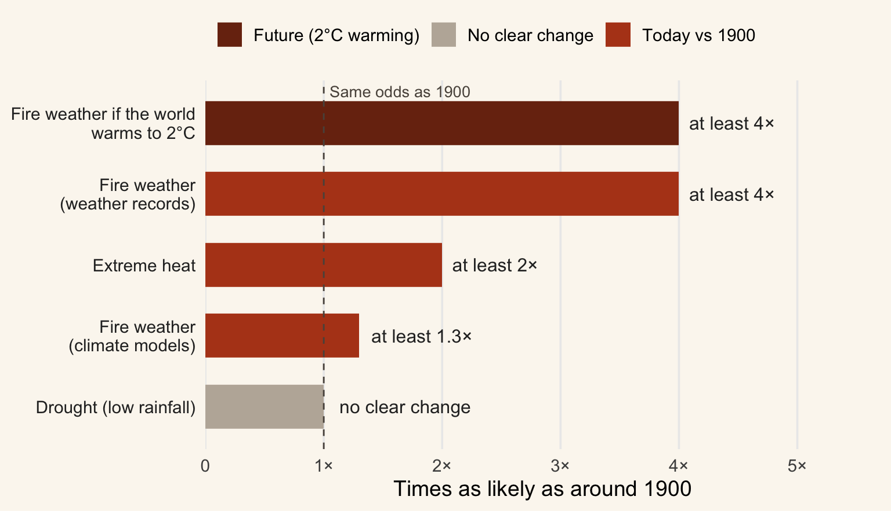

Was it bad luck, or a sign of things to come?
Think back to the summer of 2019–20. For months, smoke hung over our cities, the sky turned orange at midday, and fires burned through more than 19 million hectares of the south-east. Thirty-four people died, thousands of homes were lost, and wildlife losses were counted in the hundreds of millions or more.
Once the fires were out, a question kept coming up around kitchen tables and in the news: was this just a terrible year, or is climate change making seasons like this more likely?
It matters because the answer changes what we should expect next. If Black Summer was a once-in-a-lifetime fluke, we can hope it won’t happen again soon. If the odds are shifting, we need to plan for more summers like it.
In this post I look at what one major scientific study found, focusing on three simple questions:
- Did climate change make the dangerous fire weather of 2019–20 more likely?
- Which ingredient mattered most: the heat, or the drought?
- What does this mean for future summers?
What the evidence shows
Where the evidence comes from
The findings here come from a 2021 study by an international team of climate scientists led by Geert Jan van Oldenborgh, published in the journal Natural Hazards and Earth System Sciences (van Oldenborgh et al. 2021). The team works on “attribution science”, which tries to measure how much climate change has changed the odds of a particular extreme event.
They combined three kinds of evidence:
- Weather records: detailed daily measurements of temperature, humidity, wind and rain across south-eastern Australia’s forests going back to 1979, plus older station records that reach back to around 1900.
- Climate models: computer simulations of the climate run both with and without the extra greenhouse gases humans have added, so the two worlds can be compared.
- A fire danger score: the Fire Weather Index, which combines heat, dryness and wind into one number and lines up well with how much land actually burns.
The key comparison is simple: how likely was weather like Black Summer’s in today’s climate, compared with the climate of about 1900, before most human-caused warming?
The fire weather is now more likely
The short answer to our first question is yes. Figure 1 shows how many times more likely each type of extreme has become since around 1900. Anything to the right of the dashed line is more likely today than it used to be.
Using the climate models, the scientists found that fire weather as extreme as Black Summer’s is at least 30% more likely than it was around 1900. Using real weather records instead, the increase is much bigger: at least four times as likely. The scientists treat the 30% figure as a floor, because the climate models tend to warm more slowly than the real world has.
Heat, not drought, did the damage
Our second question was about the ingredients. A bad fire season needs heat and dryness, and Table 1 pulls the two apart.
| Ingredient | What changed since ~1900 | Linked to climate change? |
|---|---|---|
| Extreme heat | At least 2× as likely | Yes, and the biggest single driver |
| Overall fire danger | At least 1.3× (models) to 4× (records) | Yes |
| Drought (low rainfall) | No clear change | No, mainly natural weather patterns |
| Fire danger at 2°C warming | At least 4× as likely | Expected to keep rising |
Heat is the clear culprit. A week of extreme heat like the one in December 2019 is now at least twice as likely, and rising temperatures account for roughly a third to a half of the jump in fire danger.
Drought is a different story. The record-low rainfall of 2019 was not clearly linked to climate change. Instead, it came mostly from two natural ocean and wind patterns, the Indian Ocean Dipole and the Southern Annular Mode, which both happened to line up badly that year. In other words, nature dealt a dry hand, and a warmer climate made the heat on top of it worse.
And the future?
The last row of Table 1 answers our third question. If global warming reaches 2°C above pre-industrial levels, which is on track to happen this century without deeper emission cuts, a fire season like Black Summer becomes at least four times as likely as it was around 1900, according to the models.
One thing to keep in mind: these numbers are minimums, not exact predictions. The scientists deliberately chose cautious estimates, and the study only looks at the weather. It doesn’t include things like fuel loads, where fires start, or how well communities are prepared, all of which also shape how much damage a fire season causes.
The bottom line
So, was Black Summer just bad luck? Partly, but not entirely. The drought that dried out the forests was largely natural bad luck. The extreme heat on top of it was not: climate change made that heat, and the fire danger that came with it, noticeably more likely (van Oldenborgh et al. 2021).
To sum up the answers to our three questions:
- Did climate change make the fire weather more likely? Yes. By at least 30% according to models, and around four times according to real weather records.
- Heat or drought? Heat. Rising temperatures are the main way climate change is raising the fire risk, while the drought came mostly from natural patterns.
- What about the future? The odds keep climbing as the planet warms. At 2°C of warming, a season like Black Summer becomes at least four times as likely as in 1900.
For anyone living in or near Australia’s forests, the takeaway is that the past is no longer a reliable guide to the future. Summers like 2019–20 should be planned for, not just remembered.
References
van Oldenborgh, Geert Jan, Folmer Krikken, Sophie Lewis, Nicholas J. Leach, Flavio Lehner, Kate R. Saunders, Michiel van Weele, et al. 2021. “Attribution of the Australian Bushfire Risk to Anthropogenic Climate Change.” Natural Hazards and Earth System Sciences 21 (3): 941–60. https://doi.org/10.5194/nhess-21-941-2021.